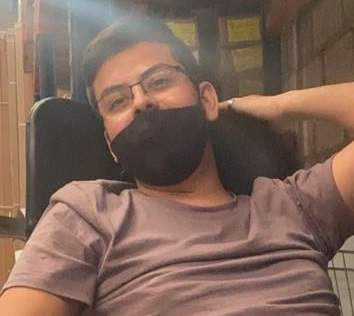

Curriculum Vitae
Pacheco Arellano Atzin Natanael
Phone: +52 33 24596665
E-mail: atzin_pacheco@live.com
Social Networks: Facebook
Age: 22 years old
Nationality: i'm from Mexico
Last Degree: Preparatory
Current Degree: University
Skills:
Playing soccer
Playing chess
Playing Shooter videogames
Work in team
Work Experience:
4 years working at Papelería Cornejo in refund Area
Project Experience:
Only school projects
Professional Interests:
Interests in Web and Security
Software Experience:
MS Office 70%
C# 65%
Java 40%
C++/C 60%
Languages:
Spanish: Native
English 70%
Personal References:
Jonathan Martin Civrian Camacho
Nancy Alejandra Perez Alonso